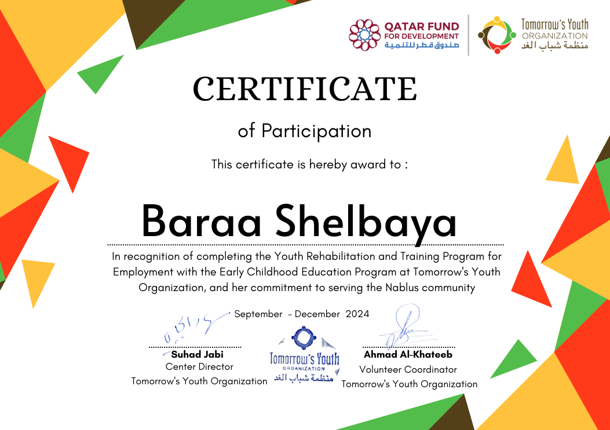
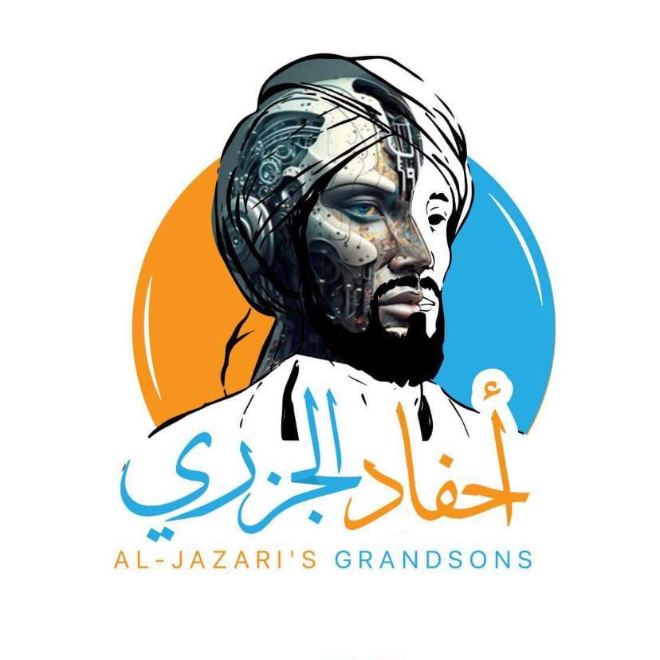

Volunteer Experience

TYO (Tomorrow’s Youth Organization)
Empowering youth and women through education and skill-building.
- Volunteered as a mentor and educator, supporting community programs.
- Assisted in organizing workshops to enhance youth development.
- Helped in administrative and logistical tasks.

أحفاد الجزري
Encouraging STEM education and innovation among students.
- Conducted educational sessions focused on engineering and technology.
- Assisted in robotics and programming workshops.
- Provided mentorship for students in STEM fields.